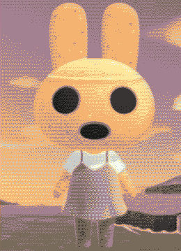

<html lang="en"></html>
 <head>
  <meta charset="UTF-8" />
  <meta name="viewport" content="width=device-width, initial-scale=1.0" />
  <title>&#10028; assigning queer identities to animal crossing characters &#10028;</title>
  <link rel="icon" type="image/x-icon" href="img/pxflower3.png">
  <link rel="stylesheet" type="text/css" href="../style.css" />
  <link rel="stylesheet" type="text/css" href="blog_style.css" />
  <script src="https://kit.fontawesome.com/85bfb0bd19.js" crossorigin="anonymous"></script>
 </head>
 <body>
  <button onclick="topFunction()" id="to_top" title="Go to top"><span style="font-size:24px;">&#8593;</span>&nbsp;&nbsp;to top</button>
  <div id="container">

   <div class="logo">
    
   </div>

   <div id="box">
    <div id="contentboxes">
	  <div id="gridbg">
     <main>
      <!-- WEBLOG BOX -->
      <div>
       <h2>im sick on day 1 of pride month so im assigning queer identities to animal crossing characters while the antihistamines kick in</h2>
       <p class="blogdetail"><time datetime="2024-06-30">jun 1, 2025</time><span> &#x2022; word count: 1414</span></p>

       <a href="../weblog.html"><i class="fa-solid fa-circle-arrow-left" style="color:#f2cf5c;text-shadow:0 0 10px rgba(243, 247, 118, 0.2);"></i> go back </a>

       <div style="display:inline;float:right;width:fit-content;">
        <script src="../fontchanger.js"></script>
       </div>
         
       <hr style="margin-top:15px;"/>
       <article>
        <div class="code" style="width:70%;display:flex;flex-direction:column;align-items: center;text-align: center;">
          
          <p>This weblog uses <span class="tooltip">terminology</span><span class="tooltiptext">"queer", "fruity", "transsexual"</span> with historically lgbtphobic connotations, occasionally references lgbtphobia, and includes jokes about sex and kinks.</p>
          <p>Overall this is a dumb silly post I made for fun, but your own wellbeing is always worth considering.</p>
        </div>
        <p>Look. It&rsquo;s the beginning of pride month and I wanna have some fun even though I feel like crap and can&rsquo;t do much to celebrate.</p>
        <p>Also I&rsquo;m trying to list the characters off the top of my head from memory because i thought it would be funnier that way</p>
        <h3>my objectively correct headcanons</h3>
        <p><strong>Blathers</strong> - I think Blathers is a bit too old to fit the demographic of <em>those light academia he/theys</em>, but if one of the museum visitors introduced him to 2021 tiktok i think he&rsquo;d maybe resonate with it on a level beyond just a love of infodumping. He still wouldn&rsquo;t use any specific labels but Celeste might eventually encourage him to play around with pronouns.</p>
        <div class="pic" style="width:204px;float:left;margin-right:20px;">
            <h2 class="subheader">celeste_notthegame.png</h2>
            <figure></figure>
        </div>
        <p><strong>Celeste</strong> - She&rsquo;s <em>lesbian</em> colors right? I&rsquo;m probably gonna include pictures when i post this but i dont have anything pulled up right now so im just gonna assume shes lesbian. I also think she usually goes by she/her but also has a thorough <a href="http://pronouns.cc">pronouns.cc</a></a> page linked in her bio full of neos like star/stars and sol/solar and it&rsquo;s all super corny but star&rsquo;s so cute that sol comes off as endearing</p>
        <p><strong>Those gay cops</strong>: FUCK OFFFF IDC IF YOU FUCK MEN NO COPS AT PRIDE</p>
        <div class="pic" style="width:204px;float:right;margin-left:20px;">
            <h2 class="subheader">faceless_cat.png</h2>
            <figure></figure>
        </div>
        <p><strong>The faceless cat</strong> - <em>Bigender</em> icon. You might assume a faceless cat would obviously agender, or at least a-something, seeing how Blanca is identified by a lack of something. But by not having a single default, Blanca is able to contain multiples at the same time. Also i think Blanca is either a boy or a girl depending on which version you play which is as good a justification as any</p>
        <p><strong>Tom Nook</strong> and <strong>Redd</strong> - ez we all know they&rsquo;re bitterly divorced <em>gay lovers</em> who still fuck nasty. I think Timmy and Tommy are secretly their lovechildren but i dont think Redd or the kids know. I guess that would make Tom Nook <em>transmasc</em> but there could just as easily be some tanuki magic involved</p>
        <div class="pic" style="width:204px;float:left;margin-right:20px;">
            <h2 class="subheader">isabelle.png</h2>
            <figure></figure>
        </div>
        <p><strong>Flick</strong> is a <em>twink</em></p>
        <p><strong>Isabelle</strong> - She is a <em>transgender woman</em>. She is often overworked not just because of her administrative duties, but also because her exhaustion is reflective of the amount of effort that&rsquo;s required of her within her workspace to perform femininity to the extent that she can be considered a non-threat even amongst her other queer coworkers. Also she cute</p>
        <p><strong>Label</strong> is probably the most <em>transfem</em> of transfems in Animal Crossing. She changes her name between games, has a complicated relationship with her family that slowly heals over the course of the series, and she feels strongly about letting the player dress in ways that resonate with their own authentic selves</p>
        <p><strong>Tortimer</strong> - <em>Gay elder</em> who who frequently refers to himself as a &ldquo;<em>transsexual</em>&rdquo; despite presenting masc and using he/him pronouns. Some of the baby gays are touchy about it but he&rsquo;s been a saint to the community since before stonewall so no one really says anything negative about him. Including me. I would defend him to the death</p>
        <div class="pic" style="width:204px;float:right;margin-left:20px;">
            <h2 class="subheader">rover.png</h2>
            <figure></figure>
        </div>
        <p><strong>Kap&rsquo;n</strong> - <em>Aro</em> but would go gay for the sea.</p>
        <p><strong>Rover</strong> - he&rsquo;s <em>abrosexual</em>. He told me. He&rsquo;s cool with me telling you. We&rsquo;re very close</p>
        <p><strong>Resetti</strong> - a <em>bisexual bear</em> who&rsquo;s been deeply involved in <em>leather subculture</em> for decades</p>
        <p><strong>Gulley</strong> - a chronically single <em>demiromantic pansexual</em>. It&rsquo;s not his fault he&rsquo;s single, though his habit of getting shipwrecked does make him a somewhat unreliable partner. But mostly it&rsquo;s because the modern dating scene is a nightmare to navigate, especially if you&rsquo;re an &ldquo;anything goes&rdquo; type who&rsquo;s not into hookups or situationships.</p>
        <div class="pic" style="width:204px;float:left;margin-right:20px;">
            <h2 class="subheader">fishingbeaver.png</h2>
            <figure></figure>
        </div>
        <p><strong>Tommy</strong> - currently <em>questioning</em> his gender. Still goes by he/him but sometimes likes to dress fem when he&rsquo;s off the clock. Timmy knows and is keeping this to himself until Tommy&rsquo;s ready to come out</p>
        <p><strong>That fishing beaver</strong> - a <em>heterosexual trans man</em> who never gets clocked and is often treated as an outsider within LGBTQ+ spaces. Poor guy just isnt fruity enough for the gay bar</p>
        <p><strong>Pascal</strong> i think? yknow, the red otter who insists that saying "maaaaaaaaan" is gender neutral - slightly problematic language aside, hes the fruitiest otter i have ever seen but is somehow mostly cishet???? Like sure if you asked him for his pronouns he&rsquo;d probably just be like whatever <em>anything goes</em> but overall he still thinks of himself as a straight cis dude. I kinda suspect there&rsquo;s something more going on but its really hard to tell exactly what</p>
        <div class="pic" style="width:204px;float:right;margin-left:20px;">
            <h2 class="subheader">pinkpelican.png</h2>
            <figure></figure>
        </div>
        <p><strong>That pink pelican</strong> at the post office who was always mean to me when i was like 5 - in retrospect she was for sure a <em>righteously bitter old queen</em> who&rsquo;d seen too much shit and built up her walls because she knew i was country and for sure a product of my environment and expected me to repeat the slurs i heard from every other adult in my life. It sucks that she took her frustration out on a child, but looking back i can understand where she was coming from</p>
        <p><strong>That one peacock</strong> - i mean come on</p>
        <p><strong>The ghost</strong> - he&rsquo;s <em>gay</em>. Don&rsquo;t worry, he didn&rsquo;t die due to homophobia - in fact, he was very well loved and supported throughout his life until he eventually died of malaria - but good on you for remembering our history</p>
        <div class="pic" style="width:204px;float:left;margin-right:20px;">
            <h2 class="subheader">brewster.png</h2>
            <figure></figure>
        </div>
        <p><strong>Brewster</strong> is a <em>stone butch he/him lesbian</em> who&rsquo;s on T primarily for the bottom growth but most people assume he&rsquo;s a cishet dude because of his disposition. The main difference between him and that fishing otter is that Brewster privately thinks everyone&rsquo;s assumptions about him are hilarious</p>
        <p><strong>K.K. Slider</strong> - hoooly shit how has it taken me this long to get to K.K. Slider? Anyway he&rsquo;s <em>asexual</em> but specifically the kind of ace who fucks hard and fucks often</p>
        <p><strong>The airport dodos</strong> - i know you&rsquo;ve been paying attention to each and every word ive written here, so you&rsquo;re probably expecting me to say that they&rsquo;re gay lovers. This was my first assumption, but it turns out they&rsquo;re actually both <em>aroace</em> and in a queerplatonic relationship. Which is probably for the best; kissing with beaks is probably more trouble than it&rsquo;s worth</p>
        <div class="pic" style="width:204px;float:right;margin-left:20px;">
            <h2 class="subheader">harvey.png</h2>
            <figure></figure>
        </div>
        <p><strong>Harvey</strong> - <em>sex-repulsed aroace</em> but still aggressively sex positive to the degree where its kinda annoyingly preachy but we all know he means well</p>
        <p><strong>That pink alpaca</strong> - wait she&rsquo;s also <em>lesbian</em> colors right?? Ive decided that she and Celeste are in lesbian together and its really cute and this is my new favourite ship (aside from Tom &amp; Redd&rsquo;s toxic yaoi ofc)</p>
        <div class="pic" style="width:174px;float:left;margin-right:20px;">
            <h2 class="subheader">coco.png</h2>
            <figure></figure>
        </div>
        <p><strong>Coco</strong> - <em> transfem non-binary</em> and uses it/its pronouns. Obviously. You really expect me to believe that thing (tone indicator: term of endearment) has a gender?</p>
        <p><strong>Audie</strong> is a <em>sapphic non-binary girl</em> and also my best friend</p>
        <p>That one octopus villager. No not that one. Or that one. <strong>The third octopus villager that comes to your head</strong> is <em>non-binary</em>. The other two are probably some flavour of queer but they&rsquo;re currently outside the scope of this weblog.</p>
        <p><strong>Raymond</strong> - <em>achillean</em> and <em>transmasc</em> but also owns stock in Tesla so we don&rsquo;t claim him and also haha sucks to be him</p>
        <div class="pic" style="width:174px;float:right;margin-left:20px;">
            <h2 class="subheader">mummydog.png</h2>
            <figure></figure>
        </div>
        <p><strong>That mummy dog</strong> is <em>transmasc</em> and was woefully misinformed abt how the &ldquo;sex change operation&rdquo; actually works. Poor guy got every single gender-affirming surgery available to him all at once. Luckily the village and/or island offers free healthcare but the recoverys gonna be brutal</p>
        <p><strong>Bob</strong> is <em>genderfluid</em> because I like Bob and I&rsquo;m pretty sure I haven&rsquo;t made anyone genderfluid yet</p>
        <p>Wait shit i didnt include any bisexuals either. Why do i keep forgetting my own people? Fuck it <strong>Ankha</strong> is <em>bi</em> because im pretty sure ive seen fanart of her sitting in chairs in ways those chairs arent meant to be sat in.</p>
        <p>And finally, <strong>every single gyroid</strong> in these games is <em>polyamorous</em>. To be clear, they aren&rsquo;t all dating each other; there&rsquo;s actually a highly complex interconnected web of relationships that are constantly in flux as old relationships amicably end and new ones begin. Most non-gyroids can&rsquo;t keep up with their whole situation but to be fair it&rsquo;s really none of their business</p>
        <div class="pic" style="width:304px;margin-left:auto;margin-right:auto;">
            <h2 class="subheader">gyroidparty.png</h2>
            <figure></figure>
        </div>
        <p>anyway i would keep going but im getting too drowsy and i still have to turn this into a proper webpage sooo happy pride month everyone! please love yourself and survive no matter what</p>
       </article>
	   	  <hr />
       <a href="../weblog.html"><i class="fa-solid fa-circle-arrow-left" style="color:#f2cf5c;text-shadow:0 0 10px rgba(243, 247, 118, 0.2);padding-bottom:30px;"></i> go back </a>
      <!-- END CONTENT -->
     </main>
	  </div>
    </div>
   </div>
   <script>
      // Get the button
      let mybutton = document.getElementById("to_top");
      
      // When the user scrolls down 20px from the top of the document, show the button
      window.onscroll = function() {scrollFunction()};
      
      function scrollFunction() {
        if (document.body.scrollTop > 20 || document.documentElement.scrollTop > 20) {
        mybutton.style.display = "block";
        } else {
        mybutton.style.display = "none";
        }
      }
      
      // When the user clicks on the button, scroll to the top of the document
      function topFunction() {
        document.body.scrollTop = 0;
        document.documentElement.scrollTop = 0;
      }
   </script>
 </body>
</html>